ЛАБОРАТОРНАЯ РАБОТА № 9
СОЗДАНИЕ ИНТЕРАКТИВНОГО
WEB-ПРИЛОЖЕНИЯ НА ЯЗЫКЕ PHP
Цель работы — 1) установить комплекс для работы с PHP;
2) изучить основы языка PHP;
3) создать на языке php интерактивное web-приложение — простейший
калькулятор, способный выполнять простейшие арифметические действия.
Теоретическая часть
I. Установка сервера PHP
Ход работы
a. Зайдите в папку с установочным файлом и запустите его.
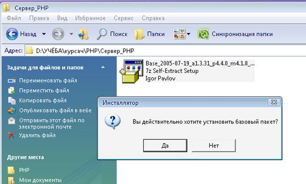
Рис. 9. 1
b. Программа установки имеет следующий вид:
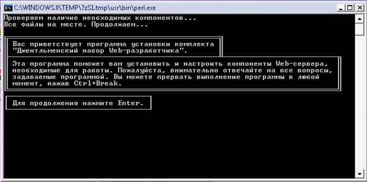
Рис. 9. 2
Для продолжения установки нажмите клавишу ENTER
c. Появится запрос на указание полного пути к директории, в которую следует установить комплекс. По умолчанию будет предложен следующий путь: C:\WebServers.
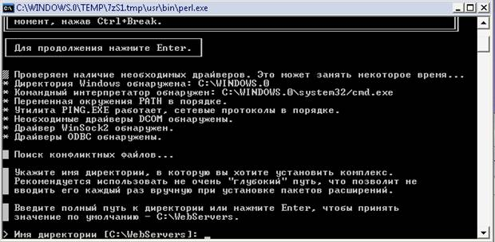
Рис. 9. 3
Нажмите клавишу ENTER, чтобы принять настройки по умолчанию (рекомендуется) или введите другой путь.
d. Подтвердите установку комплекса в выбранную директорию (введите символ ‘y’) и нажмите клавишу ENTER.
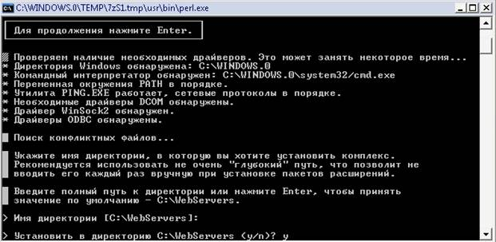
Рис. 9. 4
e. В окне появится информация о виртуальном диске.
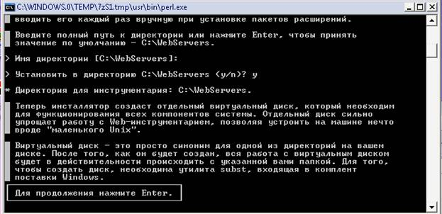
Рис. 9. 5
f. Появится запрос на указание буквы виртуального диска. Можно ввести любую неиспользуемую букву, но оптимальный вариант — Z.
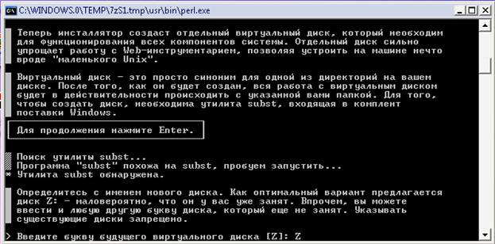
Рис. 9. 6
Нажмите клавишу ENTER.
g. В окне появится сообщение о создании виртуального диска и готовности программы произвести копирование файлов в указанную директорию.
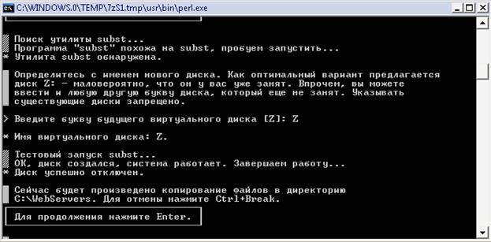
Рис. 9. 7
h. В окне появится информация о двух возможных режимах запуска комплекса и запрос о выборе режима.
Рис. 9. 8
Введите ‘1’ и нажмите клавишу ENTER.
i. В окне появится запрос о создании на рабочем столе ярлыков для запуска комплекта.

Рис. 9. 9
Согласитесь с созданием ярлыков (это упрощает работу с сервером PHP) —введите ‘y’ и нажмите клавишу ENTER.
j. В окне появится сообщение об окончании процедуры установки.
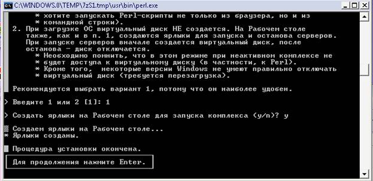
Рис. 9. 10
k. Запустите сервер с помощью созданного на рабочем столе ярлыка Start servers.
Рис. 9. 11
l. На какое-то мгновение появится черное окно загрузки программы и исчезнет. После этого Денвер перейдет в рабочее состояние. Чтобы перезапустить Денвер или отключить его воспользуйтесь ярлыками Restart servers и Stop servers соответственно.
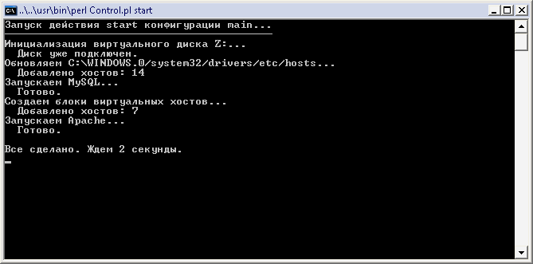
Рис. 9. 12
m. Введите в строку браузера http://localhost и убедитесь, что с жесткого диска запустился сайт с описанием Денвера.

Рис. 9. 13
II. Создание приложения на PHP
· Основы Web-программирования
Web-программирование — разработка любых программных продуктов, предназначенных для работы на сайтах World Wide Web. Строго говоря, даже разработка web-страниц на чистом HTML является web-программированием, ведь при просмотре страницы браузер фактически исполняет код HTML, форматируя текст согласно инструкциям этого языка. В настоящее время под web-программированием понимают создание CGI-приложений и использование на web-странице технологий JavaScript и VBScript для достижений сложных эффектов.
Web-сервер — программа, запущенная на узле сети Интернет и выдающая посетителям этого узла web-страницы по запросам. Также web-сервером часто называется узел, на котором эта программа запущена, или даже компьютер, являющийся таким узлом.
CGI (сокращение от Common Gateway Interface) — технология, позволяющая запускать на web-сервере программы, имеющие возможность получать данные от посетителей сайтов, поддерживаемых этим web-сервером, и в свою очередь выдавать им обработанные данные в виде web-страниц или других файлов.
Для использования технологии CGI программа web-сервер должна удовлетворять определенным критериям — "поддерживать CGI". Если программа, запускаемая на web-сервере, представлена не двоичным кодом (т. е. скомпилированным файлом), а текстовым, то для ее выполнения требуется программа-интерпретатор того языка, на котором написана эта программа.
Такой интерпретатор включается в состав web-сервера и вызывается им при необходимости заняться выполнением программного кода. CGI-сценарий (CGI-скрипт) — программа (в текстовом виде), предназначенная для исполнения на web-сервере. Для создания CGI-скриптов можно использовать любой язык программирования — важно лишь, чтобы на том web-сервере, где предполагается эту программу запускать, имелся интерпретатор этого языка.
Препроцессор — программа, работающая совместно с web-сервером, которая просматривает все или некоторые файлы, выдаваемые web-сервером посетителям, и выполняет над ними определенные действия в зависимости от содержащихся в этих файлах инструкций. РНР является именно препроцессором, что, собственно, и видно из его названия.
Все языки программирования, используемые при разработке web-сайтов, можно разделить на две большие группы.
К первой относятся те из них, код которых выполняется на компьютере посетителя сайта, т. е. в браузере, запущенном на компьютере пользователя. Это известные всем JavaScript и VBScript. Программы на этих языках встраиваются в код web-страниц или выносятся в отдельный файл, обращение к которому осуществляется из web-страницы (в этом случае браузер все равно обрабатывает такие «вынесенные» программы таким же образом, как если бы они были встроены в код страницы).
Во вторую группу включаются те языки,
программы на которых выполняются на том компьютере, где расположен web-сервер.
Эта группа более обширна — дело в том, что в принципе на web-сервере могут
исполняться программы на любом языке, даже командных
.bat-файлов
MS-DOS, важно лишь, чтобы на нем была установлена программа-интерпретатор этого
языка, удовлетворяющая стандарту CGI, которому также должен удовлетворять сам
web-сервер.
РНР относится ко второй группе — программа на РНР исполняется на web-сервере. Однако от других CGI-языков РНР сильно отличается в лучшую сторону прежде всего своей простотой. При создании программы на РНР нет необходимости учитывать все те многочисленные мелоч, которые отравляют жизнь программистам на Perl или C++, — не надо заботиться о правах доступа к файлам сценария, не надо прописывать точные пути к различным модулям, нет необходимости следить за отсутствием в файле скрипта недопустимых символов.
Синтаксис языка РНР допускает его легкое освоение как начинающим программистом, так и тем, кто уже использовал ранее какой-либо язык программирования. Можно целиком и полностью сосредоточиться на решаемой задаче и не думать о мелочах. Именно это и делает РНР подходящим выбором для web-дизайнера, который, начав его использовать, может вообще забыть о каких-либо других CGI-языках. (Впрочем, если исходить из механизма действия, то РНР более правильно называть не "CGI-языком", а препроцессором — что, собственно, отражено даже в его названии.
В то время как CGI-приложение просто выдает некие данные в браузер посетителя, препроцессор просматривает все или некоторые файлы, выдаваемые web-сервером посетителю, и ищет в них определенные команды, которые и выполняет. Именно такой способ работы и позволяет указывать код программ на РНР непосредственно в тексте web-страниц.) Одним из наиболее заметных достоинств РНР является возможность без особых затруднений работать с серверами баз данных.
Возможности РНР можно весьма серьезно расширить с помощью дополнительных модулей, содержащих различные функции. Эти модули при необходимости размещаются на web-сервере, на котором установлен PHP-интерпретатор. Большое количество готовых модулей можно загрузить с адреса http://www.php.net, там же в разделе документации приведено и полное их описание.
Например, модуль Zlib позволяет работать из программы на РНР с архивами в формате Gzip, а модуль libswf - с Flash-презентациями, создавая и редактируя их прямо из программы на РНР.
· История создания PHP
В отличие от многих других языков программирования, РНР был создан не какой-либо корпорацией или гением-программистом, а обычным пользователем, Расмусом Лердорфом, в далеком 1994 году. Цель разработки языка была проста — сделать домашнюю страничку Расмуса более интерактивной, а значит, и более привлекательной для посетителей. Расмус разработал базовый синтаксис и написал первый интерпретатор своего языка, получившего название Personal Home Page Tools, т. е. РНР. Этот интерпретатор мог обрабатывать лишь несколько основных команд, однако начало было положено.
В 1995 году Расмус доработал интерпретатор РНР, соединив его с другой своей программой, умевшей обрабатывать HTML-формы (именовавшейся FI — от "Form Interpretator"), а также сделал так, что интерпретатор, получивший название PHP/FI Version 2, мог становиться частью web-сервера. Это новшество позволило программам на РНР исполняться очень быстро. Кроме того, в том же 1995 году интерпретатор РНР был дополнен возможностями1 обработки новых команд, в частности, команд для работы с серверами баз данных и автоматического создания gif-файлов (последнее, к примеру, может быть использовано для генерации кнопок-счетчиков посещений). PHP/FI был размещен в Сети для всеобщего использования, и началось его повсеместное распространение.
К концу 1997 года РНР использовался более чем на пятидесяти тысячах сайтов. Web-мастера быстро оценили достоинства нового языка web-программирования, такие как легкость освоения и богатство возможностей, и вскоре традиционные Perl и С стали сдавать свои позиции.
Так как исходный код интерпретатора был открыт (а сам интерпретатор, понятно, бесплатен), то энтузиасты стали заниматься его доработкой, и летом 1998 года появился на свет РНРЗ — детище Зива Сураски и Энди Гутманса (Zeev Suraski and Andi Gutmans). РНРЗ был создан практически "с нуля", так как его авторы сочли код предыдущих версий недостаточно эффективным. Кроме того, РНРЗ стал весьма легко расширяемым продуктом. Любой, создавший на основе определенных стандартов модуль расширения РНР, позволяющий, скажем, работать с архивами какого-либо типа, мог этот модуль интегрировать с программными файлами РНР без каких-либо серьезных затрат времени и сил.
Уже к концу 1999 года число сайтов, построенных на основе РНР, перевалило за миллион. Весьма важным достоинством РНР также являлось то, что программы, позволявшие обрабатывать команды РНР, были созданы практически для всех операционных систем, от Windows до Unix и Linux.
В 2000-м году вышла разработанная компанией Zend Technologies четвертая версия интерпретатора РНР, дополненная множеством новых функций.
В настоящее время именно она является наиболее распространенной — РНР используется более чем на 20% сайтов Сети. Сейчас готова и проходит апробацию уже пятая версия данного языка.
· Синтаксис PHP
Синтаксис PHP во многом заимствован из таких языков как C, Java и Perl. Файл, обрабатываемый сервером как правило имеет расширение php.
Поэтому, если вы знакомы хотя бы с одним из них, вам не составит особого труда просто сесть и начать писать программы на PHP.
PHP-код включаются в html-код в следующем виде:
<?PHP текст_кода ?>
или
<?
текст_кода;
?>
Коментарии
PHP поддерживает комментарии 'C', 'C++' и оболочки Unix. Например:
<?php echo "This is a test"; // Это однострочный комментарий в стиле c++
/* Это многострочный комментарий,
это ещё одна его строка */
echo "This is yet another test"; echo "One Final Test";
# Это комментарий в shell-стиле ?>
echo
<?php echo "Эта информация будет выведена в HTML";?>
Присвоение значений переменным
Переменные в программах на PHP отделяются символами $.
$city = "Tula";
city – переменная, Tula - значение
· Некоторые операции
ü Инкремента/декремента
++$a
|
Pre-increment
|
Увеличивает $a на 1,затем возвращает $a
|
$a++
|
Post-increment
|
Возвращает $a, затем увеличивает $a на 1
|
--$a
|
Pre-decrement
|
Уменьшает $a на 1, затем возвращает $a
|
$a--
|
Post-decrement
|
Возвращает $a, затем уменьшает $a на 1
|
ü Арифметические
$a + $b
|
Сложение
|
Сумма $a и $b
|
$a - $b
|
Вычитание
|
Разность $a и $b
|
$a * $b
|
Умножение
|
Произведение $a и $b
|
$a / $b
|
Деление
|
Частное от деления $a на $b
|
$a % $b
|
Остаток
|
Целочисленный остаток от деления $a на $b
|
ü Строковые
Имеются две строковые операции. Первая — операция ('.'), которая возвращает объединение из правого и левого аргументов. Вторая — операция присвоения ('.='), которая присоединяет правый аргумент левому аргументу.
$a = "Hello "; $b = $a . "World!"; // теперь $b содержит "Hello World!"
$a = "Hello "; $a .= "World!"; // теперь $a содержит "Hello World!"
· Выражения сравнения
Выражения сравнения вычисляются в 0 или 1, означая FALSE или TRUE (соответственно). PHP поддерживает
|
> |
больше |
|
>= |
больше или равно |
|
== |
равно |
|
!= |
не равно |
|
< |
меньше |
|
<= |
меньше или равно |
Эти выражения чаще всего используются внутри условных операторов, таких как if.
Сравнения:
|
$a == $b |
равно TRUE, если $a равно $b |
|
$a != $b |
не равно TRUE, если $a не равно $b |
|
$a <> $b |
не равно TRUE, если $a не равно $b |
|
$a < $b |
меньше TRUE, если $a строго меньше $b |
|
$a > $b |
больше TRUE, если $a строго больше $b |
|
$a <= $b |
меньше или равно TRUE, если $a меньше или равно $b |
|
$a >= $b |
больше или равно TRUE, если $a больше или равно $b |
· Некоторые операторы
include "имя файла" — команда для включения содержимого одного файла в другой. Содержимое файла, имя которого указывается в команде, целиком и полностью вставляется на то место, где располагается эта команда, при этом все коды РНР, содержащиеся во вставляемом файле, исполняются так же, как если бы они были на месте этой команды. (Помните, что файл именно вставляется — т. е., например, пути к картинкам, которые должны присутствовать во вставляемом файле, следует указывать от местонахождения того файла, в котором находилась команда include.) Если файл, включаемый в страницу при помощи команды include, отсутствует, то вместо него размещается уведомление об этом, а программа на РНР выполняется дальше. (При необходимости завершения обработки и выдачи web-страницы в случае отсутствия включаемого файла, вместо команды include следует использовать команду require.)
mail ("Кому", "Тема", "Текст сообщения", "Дополнительные заголовки") — отправка почтового сообщения. При выполнении данной команды на сервере в соответствии с указанными параметрами формируется электронное письмо и отправляется с помощью установленной на сервере почтовой программы. В качестве параметра "Кому" может выступать набор адресов, разделенных запятыми. "Дополнительные заголовки" могут быть любые (естественно, допустимые почтовыми протоколами!), разделяться они должны должны комбинацией символов /n, которая в РНР означает перевод строки. (Если среди "Дополнительных заголовков" не указано поле From, то оно заполняется по умолчанию почтовой программой web-сервера, например, именем "Unprivileged User".)
echo ("текст") — вывод на web-страницу какого-либо текста. Чтобы вывести на web-страницу значение какой-либо переменной, достаточно просто написать ее имя внутри выводимой строки: команда echo "это цифра $а" выведет в web-страницу текст "это цифра 1", если ранее переменной $а было присвоено значение, равное единице. В случае необходимости использовать в выводимой строке кавычки или иные специальные символы перед этими символами следует ставить символ " .
if (условие) {...команды, которые должны выполняться, если условие верно...;} else {...команды, которые должны выполняться, если условие неверно...} — команда, позволяющая выполнить то или иное действие в зависимости от истинности верности или ложности того или иного условия. В фигурных скобках может располагаться несколько команд, разделенных точкой с запятой.
for (начальное значение счетчика, условие продолжения цикла, изменение счетчика на каждом шаге цикла) { ...команды... ;} — цикл, т. е. повторение указанных в нем команд столько раз, сколько позволит условие изменения счетчика цикла (т. е. переменной, специально выделенной для подсчета числа выполнений команд цикла).
while (условие) { ...команды... } — цикл с условием. Команды в фигурных скобках выполняются до тех пор, пока выполняется условие в заголовке цикла. Для того чтобы цикл прервался, нужно, чтобы условие выполняться перестало - поэтому внутри цикла необходимо предусмотреть возможность влиять на это условие.
Цикл do {. . .команды. . . } while (условие) работает так же, однако команды, указанные в фигурных скобках, будут выполнены по меньшей мере один раз — даже если условие выполняться не будет. Прервать выполнение любого цикла можно оператором break -дальнейшее выполнение программы пойдет с команды, следующей после закрывающей фигурной скобки. Оператор же continue прерывает текущую стадию выполнения цикла, т. е. после этого оператора дальнейшее выполнение программы начнется с очередной проверки условия заголовка цикла.
switch (выражение) {case значение: ... команды...; break; case другое значение: ... команды...; break;} — оператор выбора. При его работе содержимое, заключённое в фигурные скобки, просматривается сверху вниз. Как только будет найден оператор case со значением, совпадающим со значением выражения, РНР начнёт выполнять весь код, следующий за этим оператором case до последней фигурной скобки оператора switch или до первого оператора break, в зависимости от того, что появится раньше. (Обратите внимание, что если команду break не указать в конце кода, относящегося к одному варианту значения выражения в заголовке оператора switch, PHP будет выполнять код дальше, т. е. тот, который принадлежит уже следующему оператору case! Это — одно из отличий данного оператора от аналогичных в других языках программирования.) В конце оператора switch можно указать оператор default. Код, стоящий после него, выполнится в том случае, если значение выражения в заголовке оператора не совпадет ни с одним из значений после операторов case.
foreach (переменная as массив) { . . .команды. .. ;} — поочередное считывание всех элементов массива. Foreach считывает в указанную в его параметрах переменную поочередно все элементы указанного в них же массива, выполняя каждый раз указанный в фигурных скобках код, в котором может использоваться указанная переменная. (Значения элементов массива этим оператором только считываются, их модификация при помощи команды foreach невозможна.)
Оператор foreach может быть использован только в РНР версии 4.0 и выше.
Программа на РНР может прерываться кодом web-страницы — для этого достаточно вставить закрывающий тэг до этого кода и открывающий — после. Все, что находится между ними, будет выдаваться в браузер без какой-либо обработки, рассматриваясь как выводимое с помощью команды echo. Иными словами, код
<?php if ($a==l) { ?> <р>Переменная а равна 1 </p> <?php>}?>
эквивалентен коду
<?php if ($a==l) {echo "<p> Переменная а равна 1 </p>";}?>
Однако, первый вариант меньше нагружает процессор компьютера, на котором расположен интерпретатор РНР. Из сказанного также следует, что все программы на РНР, расположенные на одной web-странице, представляют собой одну большую программу, несмотря на то, что они разделяются блоками обычного текста страницы. Именно поэтому переменная, объявленная в расположенном в начале страницы коде, сохраняет свое значение не только до ее конца, но и во всех присоединяемых с помощью команды include файлах.
Практическая часть
Задание: создайте простейший калькулятор следующего вида:
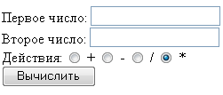
Рис. 9. 14. Интерфейс приложения «Калькулятор»
Результат вычислений должен выводиться следующим образом:
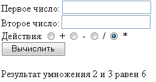
Рис. 9. 15. Интерфейс приложения «Калькулятор»
Ход работы
a. Создайте папку с именем calc для разработки приложения на виртуальном диске Z в папке home.
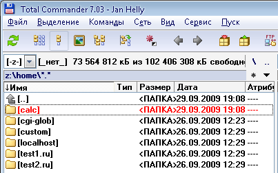
Рис. 9. 16
b. Файлы, которые будут запускаться при доступе через доменное имя http://calc должны храниться в папке www внутри только что созданного домена. Т.е. Z:\home\calc\www. Поэтому необходимо создать папку www в папке calc и сохранять файлы проекта в ней. После этого нужно перезапустить Денвер (при помощи иконки Restart Denwer на рабочем столе), для того, чтобы он создал новый виртуальных хост с именем http:// calc. При этом в папке www появится файл журнала ошибок error.
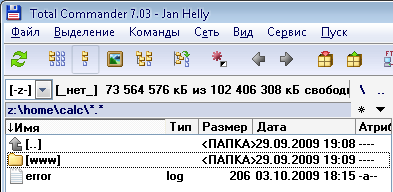
Рис. 9. 17
c. Зайдите в папку www и создайте текстовый документ. Сохраните его как calc.php.
Для просмотра созданной web-страницы (формы) в строке браузера необходимо набрать http://calc и выбрать calc.php.
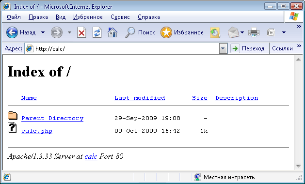
Рис. 9. 18
d. Введите следующий код:
<HTML>
<HEAD>
<TITLE>
Калькулятор
</TITLE>
</HEAD>
<BODY>
</BODY>
</HTML>
<?php
global $action;
function show()
{
?>
Здесь переменная action отвечает за выбранное арифметическое действие.
Функция show осуществляет вывод на экран формы калькулятора.
e. Для создания формы на стороне клиента для занесения данных используйте тег
<form>
<form action=url method=get|post>
…
</form>
Атрибут action=url определяет url GCI-приложения, предназначенного для обработки присланных данных. По умолчанию используется текущий url.
Атрибут method=get|post указывает метод передачи данных серверу. Метод get (используется по умолчанию) предполагает передачу данных GCI-приложению через переменные среды, устанавливаемые на стороне сервера. В зависимости от web-сервера и операционной системы могут использоваться разные переменные среды. Для передачи данных, присланных методом get, используется переменная QUERY_STRING.
f. Далее создайте интерфейс калькулятора, как показано на рис. 9. 14 и 9. 15.
g. После фрагмента кода, отвечающего за интерфейс калькулятора, вставьте фрагмент кода, реализующий вычисления, т.е. функцию calc.
<HTML>
<HEAD>
<TITLE>
Калькулятор
</TITLE>
</HEAD>
<BODY>
<?php
global $action;
function show()
{
?>
<form action=calc.php method="get">
…
</form>
<?
}
function calc()
{
…
}
…
?>
</BODY>
</HTML>
Для реализации функции используйте оператор выбора switch.
Для операции деления организуйте проверку деления на 0 с выводом сообщения об ошибке.
Если кнопка «Вычислить» нажата, но числа не введены, то по умолчанию оба числа принимаются равными нулю.
Задание для самостоятельного выполнения
Вариант 1. Реализуйте в калькуляторе операцию возведения числа в квадрат (Х2). Значение вводится только в поле «Первое число».
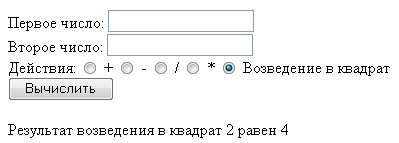
Рис. 9. 19. Интерфейс калькулятора
Вариант 2. Реализуйте в калькуляторе операцию извлечения квадратного корня из числа (√Х). Значение вводится только в поле «Первое число».
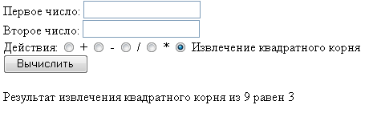
Рис. 9. 20. Интерфейс калькулятора
Примечание: для возведения числа в любую степень используется функция pow($a, $b), где $a — число, возводимое в степень, $b — значение степени.
Контрольные вопросы
1. Что такое виртуальный диск?
2. В каких режимах может запускаться комплекс Денвер?
3. Как запустить сайт с описанием Денвера?
4. Что такое web-программирование?
5. Что такое web-сервер?
6. Для чего служит технология CGI?
7. На какие группы можно разделить языки программирования, используемые при разработке web-сайтов? К какой из групп относится PHP?
8. Исправьте ошибку синтаксиса: ?<PHP текст_кода >?
9. Как в PHP ставятся комментарии?
10. Каким символом в PHP отделяются переменные?
11. Каким символом в PHP отделяются команды?
12. В чем отличие оператора switch в PHP от аналогичных операторов в других языках программирования?
13. В какой папке должны храниться файлы, которые будут запускаться через доменное имя http://my_site (укажите полный путь, при условии, что используется виртуальный диск M)?